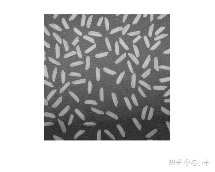
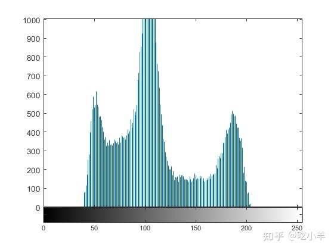

Home
本示例说明如何使用imhist函数为图像创建直方图。图像直方图是显示索引或灰度图像中强度分布的图。imhist函数通过定义n 个等距的 bin 来创建直方图，每个 bin 代表一个数据值范围，然后计算每个范围内的像素数。您可以使用直方图中的信息来选择适当的增强操作。例如，如果图像直方图显示强度值的范围很小，您可以使用强度调整函数将值扩展到更宽的范围。
将图像读入工作区并显示。
I = imread('rice.png');
imshow(I)

创建直方图。对于显示米粒的示例图像，imhist创建了一个包含 64 个 bin 的直方图。imhist函数默认显示直方图。直方图在 100 附近显示一个峰值，对应于图像中的深灰色背景。
figure; imhist(I);

======================================================================
我的测试结果及程序
下面是我测试的代码：

注：本文根据MATLAB官网内容修改而成。